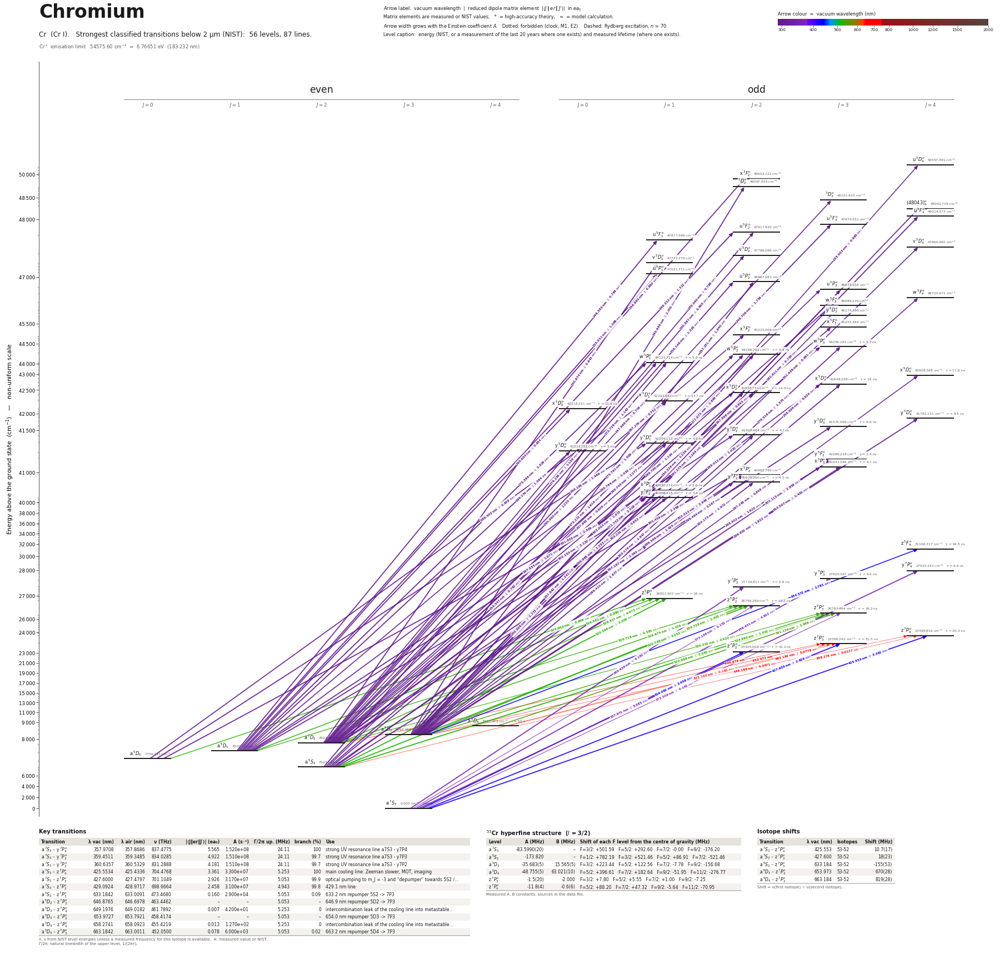

Chromium energy level diagram
Energy levels and transitions of neutral chromium (Cr I): the 87 strongest classified lines below 2 µm from the NIST Atomic Spectra Database and the 56 levels they connect, each line with its vacuum wavelength, frequency and, for 85 of them, the reduced dipole matrix element derived from the NIST transition rate. Measured lifetimes, transition rates, hyperfine constants and isotope shifts from the literature are included, each with its citation.
Hover a line or a level to isolate it, click to keep it selected. Scroll to zoom, drag to move.

Download: diagram (PDF) diagram (SVG) transitions (CSV) levels (CSV) source code

Key transitions of chromium
| Transition | λ vac (nm) | λ air (nm) | ν (THz) | |⟨J‖er‖J′⟩| (ea₀) | A (s⁻¹) | Γ/2π up. (MHz) | branch (%) | Use |
|---|---|---|---|---|---|---|---|---|
| a 7S3 – y 7P°4 | 357.9708 | 357.8686 | 837.4775 | 5.565 | 1.520e+08 | 24.11 | 100 | strong UV resonance line a7S3 - y7P4 |
| a 7S3 – y 7P°3 | 359.4511 | 359.3485 | 834.0285 | 4.922 | 1.510e+08 | 24.11 | 99.7 | strong UV resonance line a7S3 - y7P3 |
| a 7S3 – y 7P°2 | 360.6357 | 360.5329 | 831.2888 | 4.181 | 1.510e+08 | 24.11 | 99.7 | strong UV resonance line a7S3 - y7P2 |
| a 7S3 – z 7P°4 | 425.5534 | 425.4336 | 704.4768 | 3.361 | 3.300e+07 | 5.253 | 100 | main cooling line: Zeeman slower, MOT, imaging |
| a 7S3 – z 7P°3 | 427.6000 | 427.4797 | 701.1049 | 2.926 | 3.170e+07 | 5.053 | 99.9 | optical pumping to m_J = -3 and "depumper" towards 5S2 /… |
| a 7S3 – z 7P°2 | 429.0924 | 428.9717 | 698.6664 | 2.458 | 3.100e+07 | 4.943 | 99.8 | 429.1 nm line |
| a 5S2 – z 7P°3 | 633.1842 | 633.0091 | 473.4680 | 0.160 | 2.900e+04 | 5.053 | 0.09 | 633.2 nm repumper 5S2 -> 7P3 |
| a 5D2 – z 7P°3 | 646.8765 | 646.6978 | 463.4462 | – | – | 5.053 | – | 646.9 nm repumper 5D2 -> 7P3 |
| a 5D3 – z 7P°4 | 649.1976 | 649.0182 | 461.7892 | 0.007 | 4.200e+01 | 5.253 | 0 | intercombination leak of the cooling line into metastable… |
| a 5D3 – z 7P°3 | 653.9727 | 653.7921 | 458.4174 | – | – | 5.053 | – | 654.0 nm repumper 5D3 -> 7P3 |
| a 5D4 – z 7P°4 | 658.2741 | 658.0923 | 455.4219 | 0.013 | 1.270e+02 | 5.253 | 0 | intercombination leak of the cooling line into metastable… |
| a 5D4 – z 7P°3 | 663.1842 | 663.0011 | 452.0500 | 0.078 | 6.000e+03 | 5.053 | 0.02 | 663.2 nm repumper 5D4 -> 7P3 |
λ, ν from NIST level energies unless a measured frequency for this isotope is available. A: measured value or NIST. Γ/2π: natural linewidth of the upper level, 1/(2πτ).
53Cr hyperfine structure (I = 3/2)
| Level | A (MHz) | B (MHz) | Shift of each F level from the centre of gravity (MHz) |
|---|---|---|---|
| a 7S3 | -83.5990(20) | – | F=3/2: +501.59 F=5/2: +292.60 F=7/2: -0.00 F=9/2: -376.20 |
| a 5S2 | -173.820 | – | F=1/2: +782.19 F=3/2: +521.46 F=5/2: +86.91 F=7/2: -521.46 |
| a 5D3 | -35.683(5) | 15.565(5) | F=3/2: +223.44 F=5/2: +122.56 F=7/2: -7.78 F=9/2: -156.68 |
| a 5D4 | -48.755(5) | 63.021(10) | F=5/2: +396.61 F=7/2: +182.64 F=9/2: -51.95 F=11/2: -276.77 |
| z 7P°3 | -1.5(20) | -2.000 | F=3/2: +7.80 F=5/2: +5.55 F=7/2: +1.00 F=9/2: -7.25 |
| z 7P°4 | -11.8(4) | -0.6(6) | F=5/2: +88.20 F=7/2: +47.32 F=9/2: -5.64 F=11/2: -70.95 |
Measured A, B constants; sources in the data file.
Isotope shifts
| Transition | λ vac (nm) | Isotopes | Shift (MHz) |
|---|---|---|---|
| a 7S3 – z 7P°4 | 425.553 | 53-52 | 10.7(17) |
| a 7S3 – z 7P°3 | 427.600 | 53-52 | 18(23) |
| a 5S2 – z 7P°3 | 633.184 | 53-52 | -155(53) |
| a 5D3 – z 7P°3 | 653.973 | 53-52 | 670(28) |
| a 5D4 – z 7P°3 | 663.184 | 53-52 | 819(28) |
Shift = ν(first isotope) − ν(second isotope).
Listed Cr transitions below 2 µm
| Lower level | Upper level | λ vacuum (nm) | λ air (nm) | ν (THz) | Type | |⟨J‖er‖J′⟩| (ea₀) | A (s⁻¹) | Branching (%) | Source of matrix element / A |
|---|---|---|---|---|---|---|---|---|---|
| a 5D3 | u 5D°4 | 235.5030 | 235.4309 | 1272.9879 | E1 | 0.685 NIST | 8.100e+06 NIST | – | NIST ASD (accuracy D) |
| a 5D1 | x 3F°2 | 238.9946 | 238.9218 | 1254.3899 | E1 (intercombination) | 0.880 NIST | 2.300e+07 NIST | – | NIST ASD (accuracy D) |
| a 5D3 | 1D°2 | 240.9483 | 240.8751 | 1244.2188 | E1 (intercombination) | 1.001 NIST | 2.900e+07 NIST | – | NIST ASD (accuracy D) |
| a 5D2 | 3D°3 | 247.9882 | 247.9134 | 1208.8979 | E1 (intercombination) | 0.719 NIST | 9.800e+06 NIST | – | NIST ASD (accuracy D) |
| a 5D1 | u 5F°2 | 249.3322 | 249.2570 | 1202.3818 | E1 | 1.312 NIST | 4.500e+07 NIST | – | NIST ASD (accuracy C) |
| a 5D1 | u 5F°1 | 249.5831 | 249.5078 | 1201.1729 | E1 | 0.788 NIST | 2.700e+07 NIST | – | NIST ASD (accuracy C) |
| a 5D2 | u 5F°3 | 249.7059 | 249.6306 | 1200.5822 | E1 | 1.736 NIST | 5.600e+07 NIST | – | NIST ASD (accuracy C) |
| a 5D2 | u 5F°2 | 250.0595 | 249.9842 | 1198.8844 | E1 | 0.786 NIST | 1.600e+07 NIST | – | NIST ASD (accuracy E) |
| a 5D3 | (48043)°4 | 250.3283 | 250.2529 | 1197.5970 | E1 | 1.238 NIST | 2.200e+07 NIST | – | NIST ASD (accuracy D) |
| a 5D3 | u 5F°4 | 250.5061 | 250.4306 | 1196.7472 | E1 | 1.773 NIST | 4.500e+07 NIST | – | NIST ASD (accuracy C) |
| a 5D2 | v 5D°2 | 250.8865 | 250.8110 | 1194.9324 | E1 | 0.905 NIST | 2.100e+07 NIST | – | NIST ASD (accuracy D) |
| a 5D2 | v 5D°1 | 250.9736 | 250.8980 | 1194.5179 | E1 | 0.943 NIST | 3.800e+07 NIST | – | NIST ASD (accuracy C) |
| a 5D3 | v 5D°4 | 251.4377 | 251.3621 | 1192.3129 | E1 | 0.881 NIST | 1.100e+07 NIST | – | NIST ASD (accuracy C) |
| a 5S2 | u 5P°3 | 254.5474 | 254.4710 | 1177.7469 | E1 | 0.792 NIST | 1.100e+07 NIST | – | NIST ASD (accuracy D) |
| a 5D1 | u 5P°1 | 255.0309 | 254.9544 | 1175.5142 | E1 | 1.086 NIST | 4.800e+07 NIST | – | NIST ASD (accuracy D) |
| a 5D2 | u 5P°2 | 256.1460 | 256.0692 | 1170.3970 | E1 | 1.335 NIST | 4.300e+07 NIST | – | NIST ASD (accuracy D) |
| a 5D3 | u 5P°2 | 257.2513 | 257.1742 | 1165.3682 | E1 | 1.640 NIST | 6.400e+07 NIST | – | NIST ASD (accuracy E) |
| a 5D3 | u 5P°3 | 257.8424 | 257.7653 | 1162.6963 | E1 | 1.241 NIST | 2.600e+07 NIST | – | NIST ASD (accuracy D) |
| a 5D2 | w 5F°3 | 257.9927 | 257.9155 | 1162.0191 | E1 | 0.808 NIST | 1.100e+07 NIST | – | NIST ASD (accuracy D) |
| a 5D3 | w 5F°4 | 258.8978 | 258.8203 | 1157.9570 | E1 | 0.824 NIST | 8.800e+06 NIST | – | NIST ASD (accuracy E) |
| a 5D3 | y 3D°3 | 262.6105 | 262.5322 | 1141.5858 | E1 (intercombination) | 0.755 NIST | 9.100e+06 NIST | – | NIST ASD (accuracy E) |
| a 5D1 | x 5F°2 | 267.2776 | 267.1981 | 1121.6522 | E1 | 0.752 NIST | 1.200e+07 NIST | – | NIST ASD (accuracy D) |
| a 5D2 | x 5F°3 | 267.8958 | 267.8162 | 1119.0636 | E1 | 0.893 NIST | 1.200e+07 NIST | – | NIST ASD (accuracy C) |
| a 5S2 | w 5P°3 | 272.7320 | 272.6512 | 1099.2200 | E1 | 2.016 measured | 5.800e+07 measured | 30.2 | Sobeck, Lawler, Sneden, Astrophys. J. 667, 1267 (2007) |
| a 5S2 | w 5P°2 | 273.2717 | 273.1908 | 1097.0490 | E1 | 1.618 measured | 5.200e+07 measured | 28.1 | Sobeck, Lawler, Sneden, Astrophys. J. 667, 1267 (2007) |
| a 5S2 | w 5P°1 | 273.7284 | 273.6474 | 1095.2188 | E1 | 1.143 measured | 4.300e+07 measured | 23.6 | Sobeck, Lawler, Sneden, Astrophys. J. 667, 1267 (2007) |
| a 5D1 | w 5P°1 | 275.3688 | 275.2874 | 1088.6944 | E1 | 1.328 measured | 5.700e+07 measured | 31.4 | Sobeck, Lawler, Sneden, Astrophys. J. 667, 1267 (2007) |
| a 5D2 | w 5P°2 | 275.7912 | 275.7097 | 1087.0271 | E1 | 1.509 measured | 4.400e+07 measured | 23.8 | Sobeck, Lawler, Sneden, Astrophys. J. 667, 1267 (2007) |
| a 5D2 | w 5P°1 | 276.2563 | 276.1747 | 1085.1969 | E1 | 1.159 measured | 4.300e+07 measured | 23.6 | Sobeck, Lawler, Sneden, Astrophys. J. 667, 1267 (2007) |
| a 5D3 | w 5P°3 | 276.5181 | 276.4364 | 1084.1694 | E1 | 1.375 measured | 2.590e+07 measured | 13.5 | Sobeck, Lawler, Sneden, Astrophys. J. 667, 1267 (2007) |
| a 5D3 | w 5P°2 | 277.0729 | 276.9912 | 1081.9983 | E1 | 1.889 measured | 6.800e+07 measured | 36.7 | Sobeck, Lawler, Sneden, Astrophys. J. 667, 1267 (2007) |
| a 5D3 | x 5D°4 | 287.2475 | 287.1632 | 1043.6730 | E1 | 0.808 measured | 6.200e+06 measured | 10.9 | Sobeck, Lawler, Sneden, Astrophys. J. 667, 1267 (2007) |
| a 5D2 | x 5D°3 | 288.0117 | 287.9272 | 1040.9039 | E1 | 1.020 measured | 1.260e+07 measured | 20.2 | Sobeck, Lawler, Sneden, Astrophys. J. 667, 1267 (2007) |
| a 5D1 | x 5D°2 | 288.7839 | 288.6992 | 1038.1205 | E1 | 1.034 measured | 1.800e+07 measured | 26.1 | Sobeck, Lawler, Sneden, Astrophys. J. 667, 1267 (2007) |
| a 5D3 | x 5D°3 | 289.4099 | 289.3250 | 1035.8751 | E1 | 1.677 measured | 3.360e+07 measured | 53.8 | Sobeck, Lawler, Sneden, Astrophys. J. 667, 1267 (2007) |
| a 5D0 | x 5D°1 | 289.5018 | 289.4170 | 1035.5460 | E1 | 0.839 measured | 1.960e+07 measured | 26.9 | Sobeck, Lawler, Sneden, Astrophys. J. 667, 1267 (2007) |
| a 5D2 | x 5D°2 | 289.7601 | 289.6752 | 1034.6230 | E1 | 1.154 measured | 2.220e+07 measured | 32.2 | Sobeck, Lawler, Sneden, Astrophys. J. 667, 1267 (2007) |
| a 5D1 | x 5D°0 | 290.6340 | 290.5488 | 1031.5121 | E1 | 0.934 measured | 7.200e+07 measured | 96.5 | Sobeck, Lawler, Sneden, Astrophys. J. 667, 1267 (2007) |
| a 5D2 | x 5D°1 | 290.9904 | 290.9051 | 1030.2488 | E1 | 1.235 measured | 4.180e+07 measured | 57.3 | Sobeck, Lawler, Sneden, Astrophys. J. 667, 1267 (2007) |
| a 5D3 | x 5D°2 | 291.1753 | 291.0901 | 1029.5942 | E1 | 1.294 measured | 2.750e+07 measured | 39.9 | Sobeck, Lawler, Sneden, Astrophys. J. 667, 1267 (2007) |
| a 5D3 | y 5D°4 | 296.8509 | 296.7642 | 1009.9093 | E1 | 1.922 measured | 3.180e+07 measured | 14.3 | Sobeck, Lawler, Sneden, Astrophys. J. 667, 1267 (2007) |
| a 5D2 | y 5D°3 | 297.1975 | 297.1108 | 1008.7314 | E1 | 2.040 measured | 4.590e+07 measured | 21.1 | Sobeck, Lawler, Sneden, Astrophys. J. 667, 1267 (2007) |
| a 5D1 | y 5D°2 | 297.6350 | 297.5481 | 1007.2488 | E1 | 1.871 measured | 5.380e+07 measured | 25.3 | Sobeck, Lawler, Sneden, Astrophys. J. 667, 1267 (2007) |
| a 5D0 | y 5D°1 | 298.1660 | 298.0790 | 1005.4549 | E1 | 1.469 measured | 5.500e+07 measured | 26.4 | Sobeck, Lawler, Sneden, Astrophys. J. 667, 1267 (2007) |
| a 5S2 | x 5P°3 | 298.9519 | 298.8647 | 1002.8117 | E1 | 1.820 measured | 3.590e+07 measured | 21.9 | Sobeck, Lawler, Sneden, Astrophys. J. 667, 1267 (2007) |
| a 5D1 | y 5D°0 | 299.2760 | 299.1887 | 1001.7257 | E1 | 1.594 measured | 1.920e+08 measured | 96 | Sobeck, Lawler, Sneden, Astrophys. J. 667, 1267 (2007) |
| a 5S2 | x 5P°2 | 299.4941 | 299.4068 | 1000.9963 | E1 | 1.287 NIST | 2.500e+07 NIST | – | NIST ASD (accuracy E) |
| a 5S2 | y 5F°2 | 299.5975 | 299.5102 | 1000.6506 | E1 | 1.425 measured | 3.060e+07 measured | 13.8 | Sobeck, Lawler, Sneden, Astrophys. J. 667, 1267 (2007) |
| a 5D2 | y 5D°1 | 299.7452 | 299.6578 | 1000.1578 | E1 | 2.277 measured | 1.300e+08 measured | 62.4 | Sobeck, Lawler, Sneden, Astrophys. J. 667, 1267 (2007) |
| a 5S2 | x 5P°1 | 299.9659 | 299.8784 | 999.4219 | E1 | 1.253 measured | 3.930e+07 measured | 22 | Sobeck, Lawler, Sneden, Astrophys. J. 667, 1267 (2007) |
| a 5D3 | y 5D°2 | 300.1759 | 300.0884 | 998.7226 | E1 | 2.647 measured | 1.050e+08 measured | 49.4 | Sobeck, Lawler, Sneden, Astrophys. J. 667, 1267 (2007) |
| a 5D1 | x 5P°2 | 301.4590 | 301.3712 | 994.4719 | E1 | 2.369 NIST | 8.300e+07 NIST | – | NIST ASD (accuracy C) |
| a 5D0 | y 5F°1 | 301.6075 | 301.5197 | 993.9820 | E1 | 2.509 measured | 1.550e+08 measured | 52.7 | Sobeck, Lawler, Sneden, Astrophys. J. 667, 1267 (2007) |
| a 5D1 | y 5F°1 | 302.1546 | 302.0666 | 992.1823 | E1 | 2.120 measured | 1.100e+08 measured | 37.4 | Sobeck, Lawler, Sneden, Astrophys. J. 667, 1267 (2007) |
| a 5D2 | x 5P°2 | 302.5229 | 302.4348 | 990.9744 | E1 | 2.946 NIST | 1.270e+08 NIST | – | NIST ASD (accuracy B) |
| a 5D2 | x 5P°1 | 303.0043 | 302.9161 | 989.4000 | E1 | 1.015 measured | 2.500e+07 measured | 14 | Sobeck, Lawler, Sneden, Astrophys. J. 667, 1267 (2007) |
| a 5D3 | y 5F°3 | 303.1127 | 303.0244 | 989.0463 | E1 | 2.959 measured | 9.100e+07 measured | 30.9 | Sobeck, Lawler, Sneden, Astrophys. J. 667, 1267 (2007) |
| a 5D2 | y 5F°1 | 303.2235 | 303.1352 | 988.6849 | E1 | 0.953 measured | 2.200e+07 measured | 7.48 | Sobeck, Lawler, Sneden, Astrophys. J. 667, 1267 (2007) |
| a 5D3 | x 5P°3 | 303.5071 | 303.4187 | 987.7610 | E1 | 1.481 measured | 2.270e+07 measured | 13.9 | Sobeck, Lawler, Sneden, Astrophys. J. 667, 1267 (2007) |
| a 5D3 | y 5F°2 | 304.1726 | 304.0841 | 985.6000 | E1 | 1.972 measured | 5.600e+07 measured | 25.2 | Sobeck, Lawler, Sneden, Astrophys. J. 667, 1267 (2007) |
| a 7S3 | y 7P°4 | 357.9708 | 357.8686 | 837.4775 | E1 | 5.565 measured | 1.520e+08 measured | 100 | Sobeck, Lawler, Sneden, Astrophys. J. 667, 1267 (2007) |
| a 7S3 | y 7P°3 | 359.4511 | 359.3485 | 834.0285 | E1 | 4.922 measured | 1.510e+08 measured | 99.7 | Sobeck, Lawler, Sneden, Astrophys. J. 667, 1267 (2007) |
| a 7S3 | y 7P°2 | 360.6357 | 360.5329 | 831.2888 | E1 | 4.181 measured | 1.510e+08 measured | 99.7 | Sobeck, Lawler, Sneden, Astrophys. J. 667, 1267 (2007) |
| a 7S3 | z 5P°2 | 373.1863 | 373.0802 | 803.3319 | E1 (intercombination) | 0.151 measured | 1.770e+05 measured | 0.29 | Sobeck, Lawler, Sneden, Astrophys. J. 667, 1267 (2007) |
| a 7S3 | z 5P°3 | 373.3089 | 373.2028 | 803.0680 | E1 (intercombination) | 0.182 measured | 1.840e+05 measured | 0.3 | Sobeck, Lawler, Sneden, Astrophys. J. 667, 1267 (2007) |
| a 7S3 | z 7P°4 | 425.5534 | 425.4336 | 704.4768 | E1 | 3.361 measured | 3.300e+07 measured | 100 | Sobeck, Lawler, Sneden, Astrophys. J. 667, 1267 (2007) |
| a 7S3 | z 7P°3 | 427.6000 | 427.4797 | 701.1049 | E1 | 2.926 measured | 3.170e+07 measured | 99.9 | Sobeck, Lawler, Sneden, Astrophys. J. 667, 1267 (2007) |
| a 7S3 | z 7P°2 | 429.0924 | 428.9717 | 698.6664 | E1 | 2.458 measured | 3.100e+07 measured | 99.8 | Sobeck, Lawler, Sneden, Astrophys. J. 667, 1267 (2007) |
| a 5D3 | z 5F°4 | 434.5723 | 434.4501 | 689.8564 | E1 | 1.781 measured | 8.700e+06 measured | 82.2 | Sobeck, Lawler, Sneden, Astrophys. J. 667, 1267 (2007) |
| a 5S2 | z 5P°1 | 520.5960 | 520.4511 | 575.8639 | E1 | 3.309 measured | 5.240e+07 measured | 83.8 | Sobeck, Lawler, Sneden, Astrophys. J. 667, 1267 (2007) |
| a 5S2 | z 5P°2 | 520.7487 | 520.6037 | 575.6951 | E1 | 4.253 measured | 5.190e+07 measured | 84.1 | Sobeck, Lawler, Sneden, Astrophys. J. 667, 1267 (2007) |
| a 5S2 | z 5P°3 | 520.9876 | 520.8425 | 575.4311 | E1 | 5.045 measured | 5.210e+07 measured | 84.4 | Sobeck, Lawler, Sneden, Astrophys. J. 667, 1267 (2007) |
| a 5D0 | z 5P°1 | 524.9026 | 524.7565 | 571.1392 | E1 | 0.666 measured | 2.070e+06 measured | 3.31 | Sobeck, Lawler, Sneden, Astrophys. J. 667, 1267 (2007) |
| a 5D1 | z 5P°1 | 526.5618 | 526.4153 | 569.3395 | E1 | 0.990 measured | 4.530e+06 measured | 7.25 | Sobeck, Lawler, Sneden, Astrophys. J. 667, 1267 (2007) |
| a 5D1 | z 5P°2 | 526.7180 | 526.5715 | 569.1707 | E1 | 0.585 measured | 9.500e+05 measured | 1.54 | Sobeck, Lawler, Sneden, Astrophys. J. 667, 1267 (2007) |
| a 5D2 | z 5P°1 | 529.8165 | 529.6691 | 565.8421 | E1 | 0.875 measured | 3.480e+06 measured | 5.57 | Sobeck, Lawler, Sneden, Astrophys. J. 667, 1267 (2007) |
| a 5D2 | z 5P°2 | 529.9746 | 529.8272 | 565.6732 | E1 | 1.126 measured | 3.450e+06 measured | 5.59 | Sobeck, Lawler, Sneden, Astrophys. J. 667, 1267 (2007) |
| a 5D2 | z 5P°3 | 530.2220 | 530.0746 | 565.4093 | E1 | 0.420 measured | 3.420e+05 measured | 0.55 | Sobeck, Lawler, Sneden, Astrophys. J. 667, 1267 (2007) |
| a 5D3 | z 5P°2 | 534.7283 | 534.5796 | 560.6444 | E1 | 1.405 measured | 5.230e+06 measured | 8.47 | Sobeck, Lawler, Sneden, Astrophys. J. 667, 1267 (2007) |
| a 5D3 | z 5P°3 | 534.9802 | 534.8315 | 560.3804 | E1 | 1.041 measured | 2.050e+06 measured | 3.32 | Sobeck, Lawler, Sneden, Astrophys. J. 667, 1267 (2007) |
| a 5D4 | z 5P°3 | 541.1288 | 540.9784 | 554.0131 | E1 | 1.958 measured | 7.000e+06 measured | 11.3 | Sobeck, Lawler, Sneden, Astrophys. J. 667, 1267 (2007) |
| a 5S2 | z 7P°3 | 633.1842 | 633.0091 | 473.4680 | E1 (intercombination) | 0.160 measured | 2.900e+04 measured | 0.09 | NIST ASD Cr I lines table (local copy data/nist/Cr_I_lines_from1nm.tsv) |
| a 5D2 | z 7P°3 | 646.8765 | 646.6978 | 463.4462 | E1 (intercombination) | – | – | – | – |
| a 5D3 | z 7P°4 | 649.1976 | 649.0182 | 461.7892 | E1 (intercombination) | 0.00715 measured | 4.200e+01 measured | 0 | Stuhler, Schmidt, Hensler, Werner, Mlynek, Pfau, Phys. Rev. A 64, 031405(R) (2001) |
| a 5D3 | z 7P°3 | 653.9727 | 653.7921 | 458.4174 | E1 (intercombination) | – | – | – | – |
| a 5D4 | z 7P°4 | 658.2741 | 658.0923 | 455.4219 | E1 (intercombination) | 0.0127 measured | 1.270e+02 measured | 0 | Stuhler, Schmidt, Hensler, Werner, Mlynek, Pfau, Phys. Rev. A 64, 031405(R) (2001) |
| a 5D4 | z 7P°3 | 663.1842 | 663.0011 | 452.0500 | E1 (intercombination) | 0.0778 measured | 6.000e+03 measured | 0.02 | NIST ASD Cr I lines table (local copy data/nist/Cr_I_lines_from1nm.tsv) |
Reduced dipole matrix elements follow the convention A = ω³|d|²/(3πε₀ħc³(2J′+1)), with J′ the upper level. Tags show where a number comes from: measured, NIST compilation, high-accuracy theory, or a model calculation.
Cr energy levels
Cr⁺ ionisation limit 54575.60 cm⁻¹ = 6.76651 eV (183.232 nm)
Sources
- Chicireanu, PhD thesis, Universite Paris-Nord (2007), tel-00288354
- Cooper, Gibson, Lawler, J. Quant. Spectrosc. Radiat. Transfer 58, 85 (1997), as tabulated…
- NIST ASD
- NIST ASD Cr I lines table (local copy data/nist/Cr_I_lines_from1nm.tsv)
- NIST ASD level energies
- Naylor, PhD thesis, Universite Paris 13 (2016), tel-01462831
- Sobeck, Lawler, Sneden, Astrophys. J. 667, 1267 (2007)
- Stuhler, Schmidt, Hensler, Werner, Mlynek, Pfau, Phys. Rev. A 64, 031405(R) (2001)
- Stuhler, Schmidt, Hensler, Werner, Mlynek, Pfau, Phys. Rev. A 64, 031405(R) (2001). Note:…
- Stuhler, Schmidt, Hensler, Werner, Mlynek, Pfau, Phys. Rev. A 64, 031405(R) (2001). Note:…
Lifetimes are the Cooper, Gibson, Lawler (1997) LIF values as reprinted in Table 1 of Sobeck et al. 2007 (arXiv version read; 65 of the 131 levels) - method "compilation" because the original was not opened. Transition probabilities are from the machine-readable Table 3 of Sobeck et al. at CDS, restricted to lines the site draws plus all lines from z7P, y7P and z5P; NIST ASD already contains A values of comparable origin for most of them. rme_J_ea0 is derived from A with the SCHEMA convention. 53Cr has negative A in 7S3, 7P4, 5D4, 5D3 (inverted hyperfine structure; F = 9/2 is the lowest ground-state level). Isotope-shift keys are written 53-52 with the sign as printed in the source; where the source did not state its sign convention this is said in the note. Extra fields beyond SCHEMA.md: top-level ionization_limit, laser_cooling_scheme, conflicts; level fields lifetime_other, decay_to_metastable, magnetic_moment_muB; transition fields wavelength_vac_nm (measured, with isotope), linewidth_MHz, saturation_intensity_mW_cm2, doppler_limit_uK. Lifetime entries whose note says LOWER BOUND are bounds. The a5D4 level (8307.5753 cm-1) is not in data/cr/levels.csv but is the main leak / repump state and is included.
Atoms with measured data
- Lithium-632 levels, 85 lines
- Lithium-732 levels, 85 lines
- Beryllium-917 levels, 26 lines
- Sodium-2336 levels, 106 lines
- Magnesium-2418 levels, 61 lines
- Magnesium-2518 levels, 61 lines
- Potassium-3934 levels, 84 lines
- Potassium-4034 levels, 84 lines
- Potassium-4134 levels, 84 lines
- Calcium-4035 levels, 61 lines
- Calcium-4335 levels, 61 lines
- Rubidium-8536 levels, 94 lines
- Rubidium-8736 levels, 94 lines
- Strontium-8740 levels, 70 lines
- Strontium-8840 levels, 70 lines
- Caesium-13331 levels, 79 lines
- Barium-13744 levels, 89 lines
- Barium-13844 levels, 89 lines
- Dysprosium-16339 levels, 55 lines
- Dysprosium-16439 levels, 55 lines
- Ytterbium-17118 levels, 26 lines
- Ytterbium-17418 levels, 26 lines